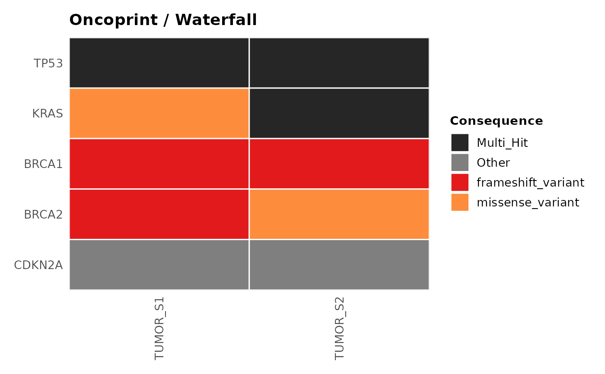
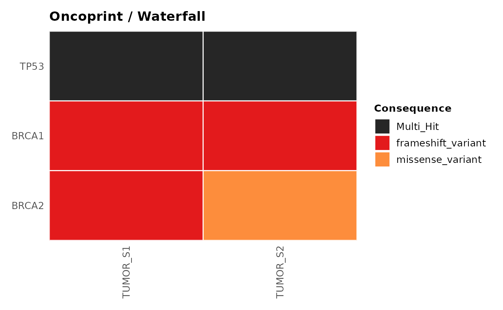
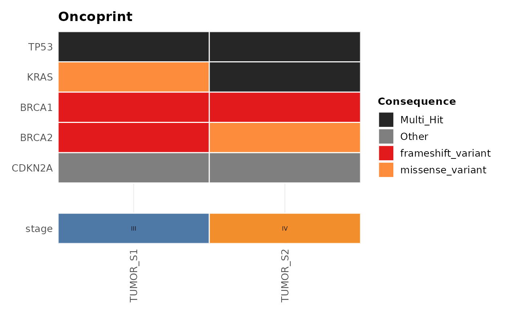

Draws a gene-by-sample mutation matrix ("oncoprint" in the
ComplexHeatmap/cBioPortal vocabulary, "waterfall plot" in the
GenVisR/maftools vocabulary — the same visualisation under two
names). plot_waterfall() is an alias for plot_oncoprint(); both
produce identical output.
Usage
plot_oncoprint(
variants,
top_n = NULL,
genes = NULL,
samples = NULL,
annotation = NULL,
palette = NULL,
interactive = FALSE
)
plot_waterfall(
variants,
top_n = NULL,
genes = NULL,
samples = NULL,
annotation = NULL,
palette = NULL,
interactive = FALSE
)Arguments
- variants
A
gvfobject fromread_vcf()orcoerce_variants(), or anydata.framewithgene,sample, andconsequencecolumns.- top_n
Integer. Show the
top_nmost frequently altered genes. Mutually exclusive withgenes; if both areNULL, defaults to10.- genes
Character vector of specific genes to show, in place of
top_n. Mutually exclusive withtop_n. Genes not present invariantsare shown as fully unaltered rows.- samples
Character vector of sample names to include as columns.
NULL(default) uses every sample present invariants.- annotation
Optional
data.frameof sample-level metadata drawn as annotation tracks below the mutation matrix. Must contain asamplecolumn matching sample identifiers invariants, plus one or more additional columns to display, one per track.NULL(default) omits annotation tracks.- palette
Named character vector of colours keyed by consequence.
NULLuses the built-ingv_palette("consequence"). If it does not already contain"Multi_Hit"or"Other"entries, they are added automatically. Unlikeplot_consequence_summary(), which shows the full breakdown of consequence types,plot_oncoprint()only distinguishesmissense_variant,stop_gained,frameshift_variant,synonymous_variant, andMulti_Hitby colour (plus their common MAF/ SnpEff aliases, e.g.Missense_Mutation); every other consequence term is shown under"Other"rather than being dropped.- interactive
Logical. Returns a
plotlyobject ifTRUE.
Details
Gene order. Genes are ranked by the number of distinct samples
carrying at least one mutation in that gene (ties broken by total
mutation count, then alphabetically), and the top_n most frequently
altered genes are shown, most-altered at the top.
Sample order. Samples are ordered using the memo-sort ("cascade")
algorithm: the displayed genes, already ranked most-to-least altered,
are treated as bits of a binary number (the most-altered gene the most
significant bit). Each sample's mutation pattern across the displayed
genes is scored as that binary number, and samples are sorted by
descending score (ties broken alphabetically by sample name). This
greedily groups samples that share mutations in the top genes together,
producing the characteristic left-to-right staircase pattern. Only the
displayed genes contribute to the score; genes excluded by top_n/
genes have no effect on sample order.
Multi-hit cells. A gene mutated more than once in the same sample
cannot be represented by a single consequence colour, so it is shown as
a distinct "Multi_Hit" category instead of either consequence.
References
Gao J, Aksoy BA, Dogrusoz U, et al. (2013). Integrative analysis of complex cancer genomics and clinical profiles using the cBioPortal. Science Signaling, 6(269), pl1. doi:10.1126/scisignal.2004088
Skidmore ZL, Wagner AH, Lesurf R, et al. (2016). GenVisR: Genomic Visualizations in R. Bioinformatics, 32(19), 3012-3014. doi:10.1093/bioinformatics/btw325
Gu Z, Eils R, Schlesner M (2016). Complex heatmaps reveal patterns and correlations in multidimensional genomic data. Bioinformatics, 32(18), 2847-2849. doi:10.1093/bioinformatics/btw313
Mayakonda A, Lin DC, Assenov Y, Plass C, Koeffler HP (2018). Maftools: efficient and comprehensive analysis of somatic variants in cancer. Genome Research, 28(11), 1747-1756. doi:10.1101/gr.239244.118
See also
plot_tmb(), plot_consequence_summary(), gv_palette()
Other ggvariant plots:
plot_consequence_summary(),
plot_lollipop(),
plot_tmb(),
plot_variant_spectrum()
Examples
vcf_file <- system.file("extdata", "example.vcf", package = "ggvariant")
variants <- read_vcf(vcf_file)
#> ℹ Reading VCF: example.vcf
#> ✔ Reading VCF: example.vcf [10ms]
#>
#> Loaded 19 variant records across 7 chromosomes.
# Top 5 most-altered genes
plot_oncoprint(variants, top_n = 5)

# A specific gene panel instead of top_n
plot_oncoprint(variants, genes = c("TP53", "BRCA1", "BRCA2"))

# With a clinical annotation track
clinical <- data.frame(
sample = c("TUMOR_S1", "TUMOR_S2"),
stage = c("III", "IV")
)
plot_oncoprint(variants, top_n = 5, annotation = clinical)
